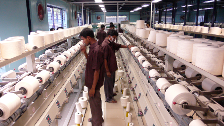

FAIR YARN PROCESSING LTD
We are proud to introduce ourselves as a newly established standard quality yarn dyeing factory ( A sister concern of Fair Trade group) situated at East Chandra, Shafipur, Kaliakoir, Gazipur, near Dhaka city.Established with the world’s best quality machineries incorporating the latest technology imported from Germany, Italy, Taiwan & China. The Factory is run by professional skilled technician & management, who have highly experienced more then ten(10) years in yarn dyeing sector in home and aboard. Our technician, staff and skilled workers are truly professional and fully dedicated to their respective assignments.The working environment of the factory is very much congenial with neat and clean atmosphere. Power supply Gas, water and all other utilities are available round the clock. The factory have its own generator to continue working in the event of power failure. We also have own water treatment plant and ETP plant is under processing.We produce various kinds of yarn like - cotton & mixed yarn. We believe that in Bangladesh we are the first yarn dyeing factory start at a time highest capacity production. We already applied for OKO Tex text. We hope within three months can get the certification.We strive to delight our customers by continuously improving the quality of products and service. Our company commitment is - our customer's satisfaction. Because we believe that quality of products and ontime delivery is vital to our customer's success and is a key determinant of our own success. We pay special attention for quality and best service. We also provide very low and competitive pricing.So, if you have any requirements of our items, please give us a chance to meet your required service and delivery schedule. Our production items are as bellow:- 100% cotton yarn (carded & combed) 20/2, 30/2, 20/s, 26/s, 30/s, 36/s. Mixed yarn: 50/50,60/40, 65/35 C/A & C/P.
LABORATORY
All components used are of the best international makes and amply oversized to guarantee the highest level of reliability.All necessary safety protections are provided in order to comply with specific regulations in force in the our country.We have equipments like water shaker laboratory dyeing machines, package laboratory dyeing machines, high temperature and high pressure dyeing machines and water bath thermostats.The high temperature sample dyeing machine we have is suitable for general laboratory purposes such as sample dyeing and wash fastness test, etc.Its maximum working temperature is 140° C. The automatic sample dyeing process is for simulating actual production conditions.The specially designed high quality stainless steel and sealed dye pots prevent air or water leakages. This is non-rust and easy to clean. It also features a stainless steel coiled cooler for quick cooling speeds and high efficiency. For consumer’s choice and suitability, we have varied volume dye-pots as 150 ml, 250 ml, 300 ml and 450 ml for different liquor ratio.It also features a specially designed washing basin with dye-pot opener and dye-pot folder for easy operation.All laboratory personnel are highly qualified for this type of specialized laboratory.
STALAM
RADIO FREQUENCY DRYER
Entirely designed and manufactured by STALAM for the specific industrial application, having high efficiency - about 70% energy conversion - and outstanding reliability. All components are easily and quickly accessible through the inspection doors. Completewith : - Feeding stage with maintenance-free air cooled high voltage transformer, set of rectifying bridges, connection to the oscillating circuit through blocking capacitors, control and protection circuits.- Control, command and check-panel at the edge of the machine equipped with dedicated micro-controller (PLC) - Selection of drying programs / recipes with "save" and "recall" facilities for the automatic management of the drying process for various products.Components, safety features and compliance with international standards All components used are of the best international makes and amply oversized to guarantee the highest level of reliability.All safety protections are provided, such as inspection doors locked by means of blocking handles, copper-beryllium sealing strips, disconnection micro switches of the high voltage circuits, special configuration of the inlet and outlet mouths preventing emissions of electromagnetic field.All electric and electronic equipment complies with CEI-IEC Standards. The high voltage and low voltage circuits are completely separated; all electromechanical components are assembled on panels and identified by number plates; the conductors are provided with terminals identified by special numbering. The dryer is also equipped with electromagnetic interference suppression systems, in order to comply with specific regulations
SOFT CONING MACHINE
Soft bobbin winder is state of art technology, design reconditioning, shape esthetic appearance. It is adopt independence motor transmission, frequency control, velocity faster, efficiency higher, end out automatic stop of photoelectric detection, and appoint with installation of number show fixed length; The winder is came into use start for low speed, electro control phone overlap, in order to secure a ball of voile elasticity and evenness. Use: The machine is specially designed for winding process of cotton, wool. chemical fiber and their blends. It can wind cops into cones with knot-less yarn for the use of finishing, knitting, doubling and other working procedures.

HARD CONING MACHINE
End-to-end of bi-facial. Electron fixed length installation, right fail-safe, broken end detection adopt photo sensor of no touch, automatic stopping at no-wear and out. Regulating block of hard-edge; Tension adjusting gear. Electric control; Overlap control adopt frequency conversion.
CENTRIFUGAL DRYER
Centrifugal Dryer machine produce speciality tube dye. Its comprehensive performance of equipment is superior to the tube on the market at present and bake the dry equipment greatly, have of simple structure, heat loss low, heat dissipation is rational in area, controlling the temperature automatically, operate the characteristic such as being convenient, it is the tube yarn at present that bakes the dry ideal equipment. This machine is suitable for all textile printing and dyeing. The stoving after bleaching is ideal for the tube yarn of cotton and chemical fiber.